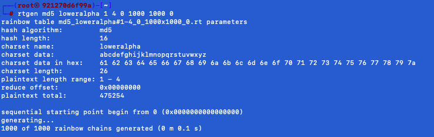
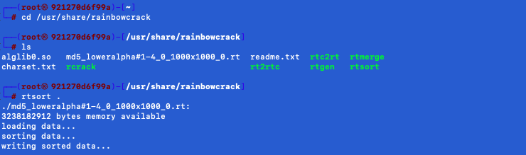
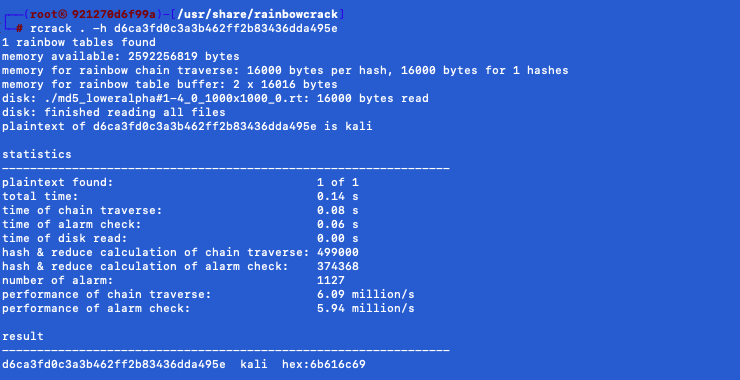

Les Rainbow Tables (ou “Tables arc-en-ciel”) sont utilisées par les hackeurs pour déchiffrer des mots de
passe.
Une Rainbow Table est un fichier volumineux contenant une multitude de mots de passe reliés à leur valeur de
hachage. Les hackeurs s’en servent pour cracker des mots de passe. Les Rainbow Tables permettent généralement
de réduire le temps et la mémoire nécessaires à l’attaque, contrairement aux attaques par force brute qui requièrent
beaucoup de temps et aux attaques par dictionnaires qui nécessitent beaucoup de mémoire.
RainbowCrack est une implémentation proposée par Philippe Oechslin qui permet de craquer les hachages avec des
tables arc-en-ciel.
Pour ce tutoriel, nous utiliserons docker pour avoir une machine pour lancer l'outil Rainbowcrack.
Télécharger le dossier suivant :
docker
Taper les commandes suivantes (en étant dans le bon répertoire où se trouve le fichier docker-compose.yml):
docker-compose up -dPour utiliser la machine avec l'outil Rainbowcrack, tapez :
docker exec -it rainbowcrack bashL'option rtgen : cet outil est utilisé pour générer les tables arc en ciel, cette étape est parfois nomméestade de pré calcul. Cette étape peut être très lente. Mais une fois ce calcul effectué, l’outil dehack sera beaucoup plus rapide. Il supporte plusieurs algorithmes dont: NTLM, MD2, MD4,MD5, SHA1, et RIPEMD160.
Pour générer une table arc-en-ciel pour un hash MD5 d'une longueur de 4 textes en clair (contenant uniquement des alphabets), nous utilisons la commande suivante :
rtgen md5 loweralpha 1 4 0 1000 1000 0Le résultat apparait comme ceci :
La table arc-en-ciel sera stockée dans le répertoire /usr/share/rainbowcrack.
Les tables peuvent aussi être téléchargées depuis certains sites, comme http://project-rainbowcrack.com/table.htm. Cela fait gagner du temps et l’espace.
Maintenant, nous pouvons utiliser cette rainbow table pour craquer le hash MD5 d'un mot de passe de 4 caractères. Nous allons le craquer en utilisant notre rainbow table créée. Avant cela, nous devons trier notre rainbow table.
Pour accéder au dossier contenant la table arc-en-ciel pour un hash MD5, taper la commande suivante :
cd /usr/share/rainbowcrackPour trier une table arc-en-ciel pour un hash MD5, nous allons utiliser la commande suivante :
rtsort .Le résultat apparait comme ceci :
Maintenant que nosu avons trié notre rainbow table, nous pouvons utiliser l'outil RainbowCrack pour craquer le mot de passe du hash MD5 qui a 4 caractères de texte en clair en minuscules.
Nous avons le hash suivant : d6ca3fd0c3a3b462ff2b83436dda495e Pour lancer la ligne de commande rcrack, tapez la commande suivante :
rcrack . -h d6ca3fd0c3a3b462ff2b83436dda495eLe résultat apparait comme ceci :
En quelques secondes, nous avons réussi à retrouver le texte en clair de notre hash avec la commande rcrack aka RainbowCrack. Le résultat est "kali" comme le montre la capture ci-dessus.
Le tutoriel est terminé, et vous savez maintenant comment manipuler RainbowCrack. Pour valider ce tutoriel, il vous suffira de rentrer "rainbow" dans la case de validation.